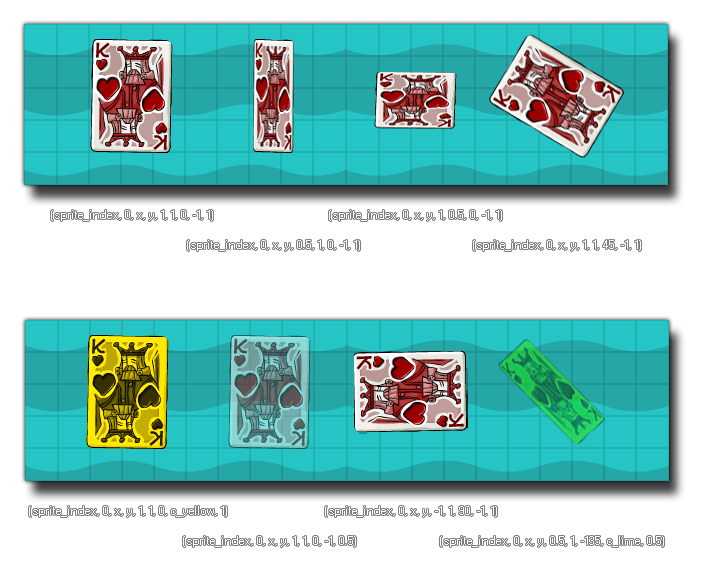

draw_sprite_ext( sprite, subimg, x, y, xscale, yscale, rot, colour, alpha );
| Argument | La description |
|---|---|
| sprite | L'index du sprite à dessiner. |
| subimg | Le subimg (cadre) de l'image-objet à dessiner (image_index ou -1 correspond à l'image courante de l'animation dans l'objet). |
| x | La coordonnée x de l'endroit où dessiner le sprite. |
| y | La coordonnée y de l'endroit où dessiner le sprite. |
| xscale | La mise à l'échelle horizontale de l'image-objet, en tant que multiplicateur: 1 = mise à l'échelle normale, 0,5 est la moitié etc... |
| yscale | La mise à l'échelle verticale de l'image-objet en tant que multiplicateur: 1 = mise à l'échelle normale, 0,5 est la moitié etc... |
| rot | La rotation du sprite. 0 = à droite, 90 = à 90 degrés dans le sens inverse des aiguilles d'une montre etc... |
| colour | La couleur avec laquelle mélanger le sprite. c_white est de l'afficher normalement. |
| alpha | L'alpha du sprite (de 0 à 1 où 0 est transparent et 1 opaque). |
Retours: N / A
Cette fonction va dessiner le sprite donné comme dans la fonction draw_sprite mais avec des options supplémentaires pour changer l'échelle, le mélange, la rotation et l'alpha de l'image-objet en cours de dessin. La modification de ces valeurs ne modifie en rien la ressource (uniquement la manière dont elle est dessinée) et vous pouvez utiliser n'importe quelle variable d'image-objet disponible au lieu de valeurs directes pour tous les arguments de la fonction. L'image ci-dessous illustre comment différentes valeurs affectent le dessin de l'image-objet: 
draw_sprite_ext(sprite_index, image_index, x, y, image_xscale, image_yscale, image_angle, image_blend, image_alpha);
Cela va dessiner les instances assignées sprite avec toutes ses valeurs par défaut (essentiellement le même que l'aide draw_self ).